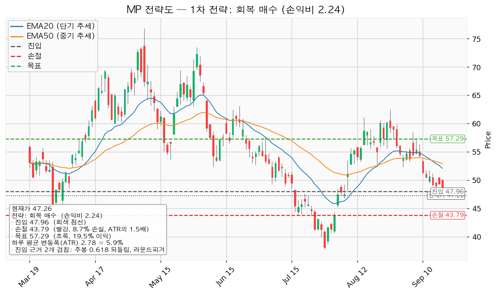
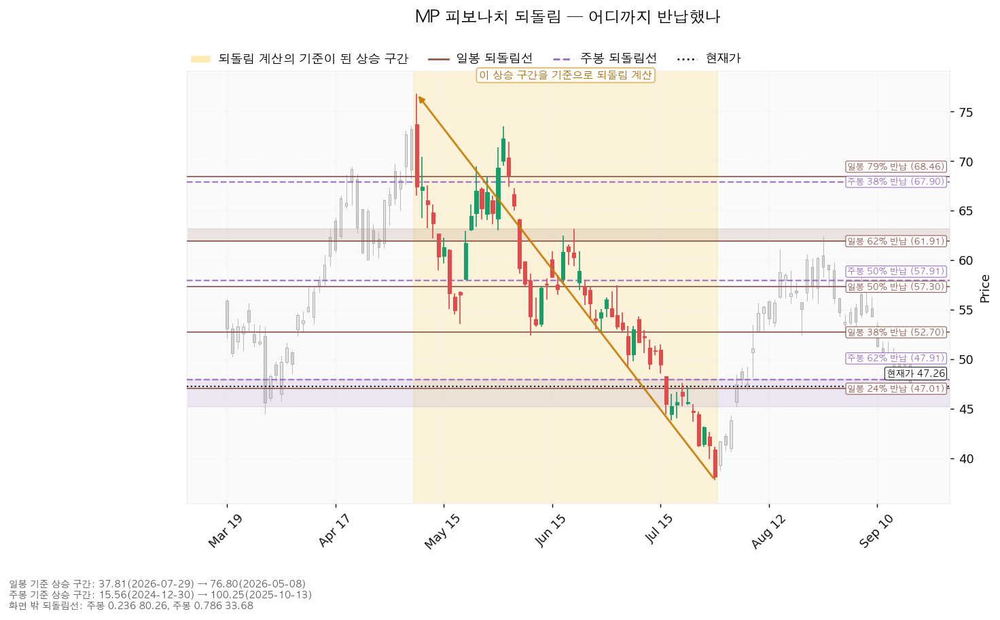
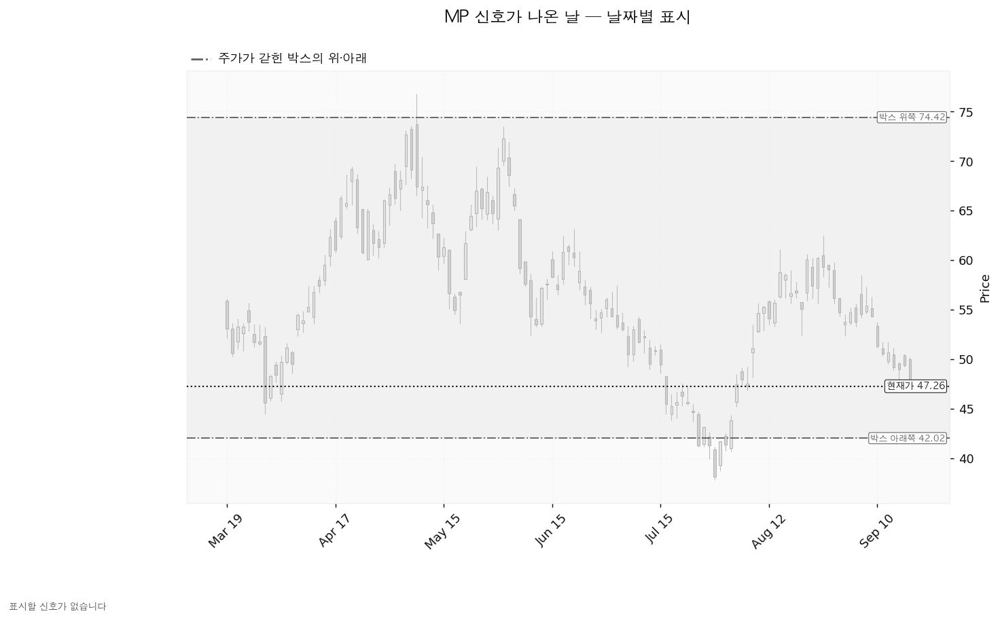
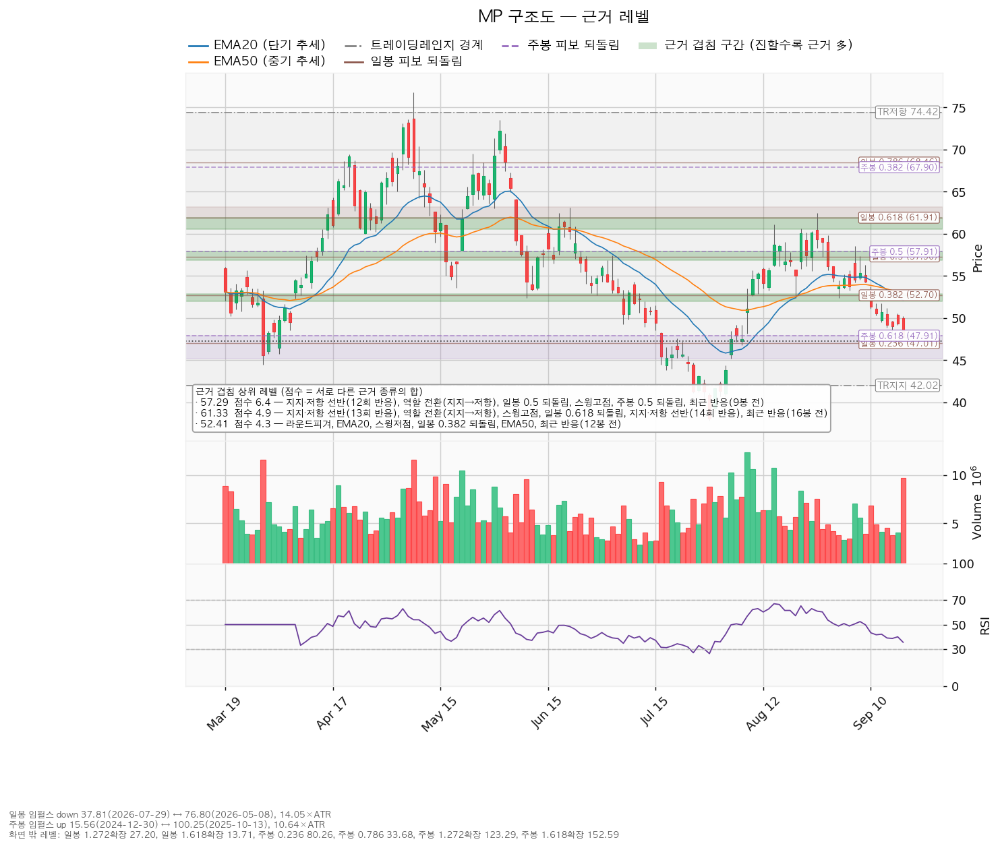

MP 머티리얼즈(MP)는 미국 캘리포니아 마운틴패스 광산에서 희토류를 채굴·정제하고, 텍사스 포트워스에서 희토류 영구자석을 생산하는 기업입니다.
기준 가격은 9월 18일 종가 47.26달러, 하루 평균 변동폭(ATR)은 2.78달러입니다. 보유분은 8월 3일 체결된 8주이고 평단은 51.4925달러입니다.
| 구분 | 가격 | 판정 방식 | 현재가 대비 | 상태 |
|---|---|---|---|---|
| 회복선(진입 조건) | 47.96달러 | 일봉 종가로 회복한 뒤 되돌림에서 지지되는지 | +1.48% (하루 평균 변동폭의 0.25배) | 회복 대기 |
| 집행 손절 | 43.79달러 | 도달 시 즉시 청산 — 47.96달러 회복 후 새로 진입한 경우에만 작동합니다. 미진입 상태에서는 무의미합니다 | -7.34% (1.25배) | 미진입 시 무의미 |
| 관망 종료 기준 | 46.00달러 | 일봉 종가가 아래로 마감 / 또는 2026-11-06 실적 | -2.67% (0.45배) | 유효 |
| 확인선 | 57.29달러 | 일봉 종가 돌파 후 되돌림에서 지지 확인 | +21.22% (3.61배) | 미돌파 |
| 폐기선(구조) | 42.02달러 | 이탈 후 3거래일 내 종가 회복 실패(또는 그 전에 39.24달러 아래 종가 마감) + 반등에서 저항으로 확인 | -11.09% (1.89배) | 유지 중 |
폐기선 42.02달러는 현재가에서 하루 평균 변동폭의 1.89배 아래입니다. 3배 안쪽이므로 무효화 기준으로 정상 작동합니다. 다만 그 사이 46.00달러 겹침 구간이 먼저 놓여 있으므로, 미진입자가 매일 볼 선은 관망 종료 기준 46.00달러입니다.
확인선 57.29달러는 대표 셋업의 목표와 같은 가격이며, 두 갈래로 씁니다. 그 자리에서 막히고 되밀리면 목표 도달이므로 전량 청산이고, 일봉 종가로 넘어서면 상승 확정이므로 그때는 새 셋업으로 다시 잡습니다. 박스 상단 74.42달러는 그 위의 맥락으로만 적습니다.
과거에 발행된 MP 리포트는 없습니다. 이번이 첫 리포트이므로 직전 대비 판정 절은 두지 않습니다.
| 항목 | 값 |
|---|---|
| 현재가(9월 18일 종가) | 47.26달러 |
| EMA20 / EMA50 | 52.09달러 / 52.89달러 |
| RSI(14) | 35.6 |
| ATR(하루 평균 변동폭) | 2.78달러 (주가의 5.87%) |
| 횡보 박스 | 42.02~74.42달러 (유효, 180봉 기준) |
| 박스 내 현재 위치 | 아래에서 16.2% 지점 |
| 국면 | 횡보 레인지(구조 유지 — 하단 사수 조건부), 추세는 하락 |
용어: EMA20·EMA50은 최근 20일·50일 평균 가격을 요즘 값에 가중치를 더 줘서 계산한 선입니다. RSI(14)는 최근 14일 상승폭과 하락폭의 비율을 0~100으로 나타낸 값으로, 50이 중립입니다. ATR은 하루에 평균 얼마나 움직이는지를 나타낸 폭입니다.
현재가 47.26달러는 EMA20(52.09달러)보다 -10.21%, EMA50(52.89달러)보다 -11.92% 아래입니다. 하루 평균 변동폭으로 환산하면 각각 1.74배·2.03배 아래이고, EMA20이 EMA50 밑에 있어 두 선의 배열도 아래를 향합니다. RSI 35.6은 중립선 50 아래이며 통상 과매도로 보는 30보다는 위입니다.
박스 판정은 753일치 일봉 중 180봉 창을 골라 내린 것입니다. 40·90·180봉을 모두 시험한 성적은 아래와 같습니다.
| 창 | 가격이 박스 안에 머문 비율 | 추세 기울기 | 박스 폭(ATR 배수) | 유효 |
|---|---|---|---|---|
| 40봉 | 75.0% | 0.462 | 4.75배 | 예 |
| 90봉 | 91.1% | 0.265 | 9.04배 | 예 |
| 180봉 | 97.2% | 0.269 | 11.67배 | 예 |
세 창이 모두 유효 판정을 받았고, 가격이 가장 잘 담긴 180봉 창이 선택됐습니다. 대신 이 창의 박스 폭은 하루 평균 변동폭의 11.67배이므로 상단 74.42달러와 하단 42.02달러는 그날그날 볼 가격으로 쓰기에는 멉니다. 이 리포트의 판정선은 박스 경계 대신 그 안쪽 겹침 구간에서 잡았습니다.
직전 구간은 20.18~88.33달러의 추세·확장 구간이었고, 지금 박스와 같은 가격대에서 겹칩니다. 위에서 내려온 것도 아래에서 올라온 것도 아니라 같은 횡보의 연장으로 해석합니다. 매집과 재분산은 같은 사각형을 그리므로, 판단 근거는 박스 안쪽의 거래량과 저점 흐름입니다.
| 관측 항목 | 값 | 방향 |
|---|---|---|
| 지지 테스트별 거래량 | 3/30 평균의 2.09배 / 4/2 0.84배 / 7/29 1.67배 / 8/6 1.26배 | 혼조 — 줄어드는 흐름이 아닙니다 |
| 저점 흐름 | 7/29 37.81달러 → 8/20 52.42달러 → 9/1 52.35달러 | 절상 |
| 상승봉 대 하락봉 거래량비 | 1.01배 | 거의 동률 |
박스 안쪽 판정은 중립이고, 그 근거로 잡힌 항목은 저점 절상 하나뿐입니다. 지지 테스트 거래량이 줄지 않았고 상승봉·하락봉 거래량도 갈리지 않았으므로 매집으로 읽을 근거가 부족합니다. 이 세 항목 중 지지 테스트 거래량이 줄어드는 흐름으로 바뀌면 매집 쪽으로 판정이 기웁니다.
산출된 셋업은 하나뿐입니다. 하락·중립 국면이므로 되돌림 저가매수는 나오지 않고, 저항을 종가로 되찾을 때만 롱으로 전환하는 계획입니다.
| 항목 | 내용 |
|---|---|
| 셋업 | reclaim_long (저항 회복 매수) |
| 구조 증명도 | 회복 확인형 (증명도 1.0 — 저항을 종가로 되찾은 뒤에만 진입하므로 진입가는 불리하나 구조가 먼저 증명됩니다) |
| 진입 | 47.96달러 (일봉 종가 회복 확인 후) |
| 진입 근거 겹침 | 2.1점 / 2개 — 주봉 0.618 되돌림, 라운드피겨(48처럼 딱 떨어지는 가격). 겹침 띠는 47.91~48.00달러 |
| 손절 | 43.79달러 — 진입 기준선에서 하루 평균 변동폭의 1.5배 아래 |
| 목표 | 57.29달러 |
| 목표 근거 겹침 | 6.4점 / 6개 — 지지·저항 선반(12회 반응), 역할 전환(지지→저항), 일봉 0.5 되돌림, 스윙고점, 주봉 0.5 되돌림, 최근 반응(9봉 전). 겹침 띠는 56.90~57.91달러 |
| 손익비 | 1:2.24 (손절 폭 4.17달러 = 1.50 ATR = 진입가의 8.69%) |
| 엣지의 종류 | 모멘텀 — "저항을 종가로 되찾으면 그 방향이 이어진다"는 전제 |
| 유형의 성격 | 자주 틀리고 소수가 크게 맞는 유형입니다(이 유형의 일반적 성격이며 이번 분석에서 측정한 값이 아니므로 승률 수치를 붙이지 않습니다) |
| 청산 | 목표 57.29달러에서 전량. 트레일링 없음 |
대표 셋업 선정 이유: 손익비 2.24 × 구조 증명도(회복 확인형) × 근거 겹침 2.1점으로 선정했습니다. 다른 셋업이 산출되지 않았으므로 손익비 1등과 대표가 갈리는 트레이드오프는 이번에 발생하지 않았습니다.
진입 근거가 얇습니다: 진입 겹침 2.1점은 주봉 되돌림선과 라운드피겨 둘뿐이며, 이 종목에서 가장 두꺼운 근거 구간은 목표 자리(6.4점)입니다. 가격이 실제로 여러 번 반응한 수평 가격대(선반)가 진입가 부근에는 없습니다. 손익비 2.24는 목표 쪽 근거가 두껍기 때문에 나온 값이고, 진입 자리 자체의 방어력은 그만큼 검증되지 않았습니다.
손절 위치: 손절 43.79달러는 겹침 구간 안에 놓여 밀어낸 값이 아니라, 진입에서 하루 평균 변동폭의 1.5배 아래로 잡은 값입니다. 바로 위 44.00달러에 라운드피겨(0.6점)가 있고, 그 아래로는 박스 하단 42.01달러(1.8점, 라운드피겨 + 박스 지지)까지 받칠 만한 근거가 없습니다. 이 손절은 이미 구조 기준 폭(1.5 ATR)이므로 구조적 손절 기준 손익비가 따로 산출되지 않았습니다 — 1:2.24가 그 값입니다. 손절 폭을 하루 변동폭 안으로 좁혀서 만든 값이 아닙니다.
분할하지 않는 이유: T1 50.00달러에서 절반 익절하고 잔여 손절을 진입가 47.96달러로 올리는 안도 함께 계산됐습니다. 그 경우 T1 구간 손익비가 1:0.49, 전 구간 합산이 1:1.37, 본전 손절로 끝날 때의 하한이 1:0.24로 떨어집니다. 단일 청산 1:2.24보다 낮으므로 57.29달러 단일 청산으로 끝냅니다.
모멘텀 전제에 고정 목표를 붙인 조합입니다. 진입 근거는 저항 회복 모멘텀인데 집행은 레인지 규칙(저항에서 전량 청산)을 따릅니다. 진입에서 목표까지가 9.33달러(3.36 ATR)로 폭 자체는 있으나, 집행 정책이 고정 목표 전량 청산이므로 그대로 냅니다. 57.29달러를 일봉 종가로 넘어서는 구간은 이 포지션의 연장이 아니라 새 셋업으로 다시 계산합니다.
추격 여부: 현재가 추격은 권하지 않습니다. 저항 회복이 확인되기 전이므로 47.26달러에서 미리 사는 자리가 아닙니다. 대기 좌표는 두 갈래입니다.

1회 매매에서 계좌의 1%를 잃는 것을 한도로 두면, 손절 폭 8.69%에서 계산되는 포지션 크기는 계좌의 11.5%입니다. 한 종목에 계좌의 13%를 넘게 싣지 않는 원칙 안쪽이므로 제한 없이 그대로 씁니다. 주당 위험은 진입 47.96달러 - 손절 43.79달러 = 4.17달러이고, 계좌의 1%를 이 값으로 나눈 수량이 매수 수량입니다.
이 11.5%에는 이미 보유 중인 8주(진입가 기준 383.68달러)가 포함됩니다. 보유분을 빼고 남는 만큼만 47.96달러에서 채우십시오.
집행 손절 43.79달러는 아래 판정과 무관하게 별도로 작동합니다. 장중 일시 이탈은 어느 단계에도 해당하지 않습니다.
| 단계 | 트리거 | 의미 | 행동 |
|---|---|---|---|
| ① 관찰 | 일봉 종가가 47.96달러 아래로 마감 | 구조 이탈 시작 — 되돌아 올라오면 속임수 하락(spring)일 수 있어 아직 무효가 아닙니다 | 신규 진입만 중단. 집행 손절은 그대로 둡니다 |
| ② 경고 | 이탈 후 3거래일 안에 47.96달러를 종가로 회복하지 못함, 또는 그 전에 일봉 종가가 45.18달러 아래로 마감(하루 평균 변동폭의 1배만큼 더 밀림) — 둘 중 먼저 오는 쪽 | 저항 회복 실패 가능성이 우세해집니다 | 잔여 비중 축소. 반등이 나오면 이 가격에서의 반응을 확인합니다 |
| ③ 무효 | 반등이 47.96달러에서 막히고 그 아래로 되밀림(지지가 저항으로 전환) | 셋업 폐기 — 구조 해석이 틀린 것으로 확정 | 포지션 정리. 새 구조가 만들어질 때까지 관망 |
셋업 무효화선(47.96달러)과 시나리오 폐기선(42.02달러)은 다른 가격입니다. 앞은 진입 근거가 깨지는 자리이고, 뒤는 박스 자체가 깨지는 자리입니다.
① 상승 전환 조건은 47.96달러 종가 회복 후 지지 → 57.29달러 종가 돌파입니다. 구조로는 아래를 한 번 속이고 올라오는 움직임(속임수 하락) 확인 → 매수세가 드러나는 상승(강세 신호) → 그 위에서 눌렸을 때 지지 확인 → 상승 국면 순서입니다. 행동은 47.96달러 회복·지지 확인 후 분할 진입, 57.29달러 돌파 시 비중 확대입니다.
② 횡보 지속 조건은 42.02달러를 지키며 57.29달러 아래 박스를 유지하는 것입니다. 구조는 유지되며 매물 소화에 시간이 필요한 국면입니다(부정 신호가 아닙니다). 신규 진입은 보류하고 아래 세 가지를 추적합니다 — 지지 테스트마다 매도 거래량이 줄어드는지(현재: 혼조), 저점이 절상되는지(현재: 절상), 상승할 때 거래량과 캔들 폭이 확대되는지(현재: 상승봉/하락봉 거래량비 1.01배). 세 항목 중 저점 절상은 이미 충족돼 있으므로, 남은 두 항목 가운데 지지 테스트 거래량이 줄어드는 흐름으로 바뀌면 매집 쪽으로 판정이 기웁니다.
③ 시나리오 폐기 조건은 42.02달러 이탈 후 3거래일 내 회복 실패(또는 그 전에 39.24달러 아래 종가 마감) + 반등에서 저항으로 확인입니다. 그 경우 박스는 매집이 아니라 재분산이었던 것이고, 추가 저점 갱신 가능성이 열립니다. 행동은 보유 8주 정리 후 새 매도 절정과 새 박스가 만들어질 때까지 관망입니다.
일봉·주봉 되돌림선이 모두 계산됐습니다.
| 기준 | 구간 | 방향 | 주요 되돌림선 |
|---|---|---|---|
| 일봉 | 76.80달러(2026-05-08) → 37.81달러(2026-07-29), 하루 변동폭의 14.05배 | 하락 | 24% 47.01 / 38% 52.70 / 50% 57.30 / 62% 61.91 / 79% 68.46달러 |
| 주봉 | 15.56달러(2024-12-30) → 100.25달러(2025-10-13), 주봉 변동폭의 10.64배 | 상승 | 24% 80.26 / 38% 67.90 / 50% 57.91 / 62% 47.91 / 79% 33.68달러 |
현재가 47.26달러는 주봉 상승 구간의 62% 되돌림선(47.91달러) 바로 아래에 있습니다. 2024년 12월 저점부터 2025년 10월 고점까지의 상승분 중 62%를 반납한 자리이고, 주봉 기준으로 되돌림이 통상 멈추는 구간(45.20~47.91달러)의 안쪽입니다. 진입 조건 47.96달러가 이 선 위에 놓인 것은 같은 가격대이기 때문입니다.
위로는 일봉 50% 되돌림 57.30달러와 주봉 50% 되돌림 57.91달러가 같은 자리에서 겹치며, 그 구간이 목표 57.29달러입니다. 서로 다른 시간 축의 되돌림선이 같은 가격에서 만나는 것이 목표 겹침 6.4점의 절반을 만듭니다.

이번 창에서 엔진이 인식한 신호일은 하나도 없었습니다. 속임수 하락(spring)·속임수 상승(upthrust)·강세 신호(SOS)·약세 신호(SOW) 어느 것도 잡히지 않았습니다. 박스는 유효 판정을 받았으므로 "판정 보류"가 아니라 "유효한 박스 안에서 표시할 만한 신호일이 없었다"는 뜻입니다. 아래 차트에 캔들만 회색으로 남고 표시가 없는 이유입니다.
국면 후보는 하락 국면(markdown)으로 잡혔습니다. 근거는 하락 추세, EMA 역배열, 기울기가 아래를 향한다는 세 가지이고, 박스 안쪽 성격은 중립입니다. 국면 후보는 확정된 판정이 아닙니다. 저점 절상이 유지되는 한, 하락 국면과 박스 하단에서의 매집은 가격 모양만으로 구분되지 않습니다.

점수는 서로 다른 근거 종류의 가중치를 더한 값입니다. 같은 종류가 여러 개 붙어도 한 번만 더해집니다.
| 가격대 | 점수 | 근거 | 현재가 대비 |
|---|---|---|---|
| 56.90~57.91달러 | 6.4 | 지지·저항 선반(12회 반응), 역할 전환(지지→저항), 일봉 0.5 되돌림, 스윙고점, 주봉 0.5 되돌림, 최근 반응(9봉 전) | +21.22% — 목표이자 확인선 |
| 60.56~61.94달러 | 4.9 | 지지·저항 선반(13회·14회 반응), 역할 전환(지지→저항), 스윙고점, 일봉 0.618 되돌림, 최근 반응(16봉 전) | +29.79% |
| 52.00~52.89달러 | 4.3 | 라운드피겨, EMA20, EMA50, 스윙저점 3개, 일봉 0.382 되돌림, 최근 반응(12봉 전) | +11.92% |
| 47.91~48.00달러 | 2.1 | 주봉 0.618 되돌림, 라운드피겨 | +1.48% — 진입 |
| 46.00~47.01달러 | 1.6 | 라운드피겨, 일봉 0.236 되돌림 | -2.67% — 관망 종료 |
| 42.00~42.02달러 | 1.8 | 라운드피겨, 박스 하단 지지 | -11.09% — 폐기선 |
위쪽으로 57.29달러와 61.33달러에 두꺼운 저항이 연달아 있고, 둘 다 예전에 지지였다가 저항으로 역할이 바뀐 자리입니다. 52.00~52.89달러 구간에는 EMA20·EMA50과 최근 스윙저점 세 개가 겹쳐 있어, 목표까지 가는 길에 먼저 넘어야 할 구간입니다.
아래쪽은 근거가 얇습니다. 46.00~47.01달러(1.6점) 아래로는 42.00달러까지 받칠 만한 겹침이 없습니다. 그 사이 5달러 구간(하루 평균 변동폭의 1.8배)에는 가격이 반복해서 반응한 가격대가 잡히지 않았습니다.

(a) 배수 — 후행 12개월 EPS가 -0.33달러 적자여서 후행 배수는 계산되지 않습니다. 선행 배수는 54.08배(내년 추정 EPS 0.87391달러 기준)입니다. 올해 추정 EPS는 0.02926달러로 흑자 전환 직전 수준이고, 내년 추정은 그보다 크게 늘어납니다. 적자에서 막 벗어나는 구간이라 배수 하나로 비싸다·싸다를 판정할 수 있는 상태가 아닙니다.
(b) 목표주가 분포 — 애널리스트 17명, 평균 74.29달러, 최저 57.00달러, 최고 100.00달러입니다. 현재가 47.26달러는 17명 전원의 목표 중 가장 낮은 57.00달러보다도 아래에 있습니다. 가장 보수적인 추정치까지 +20.61% 떨어져 있고, 평균까지는 +57.20%입니다. 추천등급은 강력매수입니다.
(c) 하락의 성격 — 내년 추정 EPS는 90일 전 1.09971달러에서 현재 0.87391달러로 -20.5% 내려왔습니다. 올해 추정도 90일 전 0.24038달러에서 0.02926달러로 -87.8% 내려왔습니다. 가격도 같은 기간 6월 22일 스윙고점 63.14달러에서 47.26달러로 -25.15% 내렸습니다. 추정치와 가격이 함께 내려왔으므로 배수 수축이 아니라 이익 전망 하향이 동반된 하락입니다. 다만 최근 30일만 보면 내년 추정은 0.87791→0.87391달러로 -0.46%, 올해 추정은 -0.00555→0.02926달러로 오히려 올라와 하향이 멈춰 있습니다. 하향이 멈춘 것과 추정치가 다시 올라가는 것은 다르므로, 11월 6일 실적에서 이 구분을 확인합니다.
(d) 현금흐름 — 2025년 12월 결산 기준으로 영업현금흐름이 -155,755,000달러, 설비투자가 172,375,000달러(전년 대비 -7.5%), 잉여현금흐름이 -328,130,000달러입니다. 영업 단계에서 현금이 나가고 있습니다. 영업은 흑자인데 설비투자가 앞서서 생긴 적자와는 성격이 다르며, 투자 회수 속도를 따지기 전에 영업 자체가 현금을 만드는지를 먼저 확인해야 하는 상태입니다. 설비투자는 전년보다 줄었으므로 투자 확대가 원인도 아닙니다.
(e) 상승 여력의 분해 — 평균 목표 74.29달러를 내년 추정 EPS 0.87391달러로 나누면 내재 배수가 85.0배입니다. 현재 선행 배수 54.08배에서 배수만 늘어나 만드는 값이며, 평균 목표까지의 +57.20%는 전부 배수 확장으로 설명됩니다. 배수를 현재의 54.08배로 유지한 채 74.29달러에 닿으려면 EPS가 1.37달러 이상이어야 하고, 이는 내년 추정 범위의 상단(1.76달러)과 하단(0.30달러) 사이 위쪽에 해당합니다. 평균 목표는 이익이 추정 상단 쪽으로 나오거나 배수가 크게 확장돼야 성립하는 값입니다.
주도주 여부: 아닙니다. 미국 11개 섹터의 20일 초과수익 기준 상위 2개는 기술(+3.43%)과 에너지(+0.76%)이고, 이 종목이 속한 소재는 -4.76%로 7위입니다. 섹터 자체가 지수에 뒤처져 있으므로, 이번 셋업은 섹터 강세의 도움 없이 개별 종목의 박스 하단 회복에만 근거합니다.
시계 차이: 컨센서스 목표주가는 12개월 기준이고 이 셋업은 수 주 기준입니다. 12개월 목표가 74.29달러인데 수 주 계획의 목표가 57.29달러인 것은 모순이 아니라 층위가 다른 것입니다. 답은 진입 47.96 / 손절 43.79 / 목표 57.29달러로 냅니다.
ATR 2.78달러는 주가의 5.87%로, 손절이 무관한 이유로 체결될 위험을 따지는 8% 기준보다 낮습니다. 손절 폭 4.17달러는 1.50배로 하루 평균 변동폭보다 넓습니다. 논지와 무관한 일상적 변동에 잘려 나갈 손절이 아닙니다. 수 주 시계에 맞는 도구입니다.
| 날짜 | 이벤트 | 볼 것 |
|---|---|---|
| 2026-11-06 | 분기 실적 발표 | 영업현금흐름이 -155,755,000달러(2025년 12월 결산 기준)에서 적자 폭을 줄였는지, 설비투자(172,375,000달러, 전년 대비 -7.5%)의 방향, 올해 EPS 컨센서스 0.02926달러 대비 실제치, 내년 0.87391달러 추정이 유지되는지 |
가격 트리거(47.96 / 46.00 / 42.02달러)와 별개로, 날짜가 정해진 확인 지점은 11월 6일 하나입니다.
가격 무효화(위 3단계)와 별개로, 11월 6일 실적에서 아래 중 하나가 나오면 이 종목을 회복 후보에서 뺍니다.
시세·구조·컨센서스 조회에서 실패한 항목은 없었습니다. 일봉·주봉 되돌림 모두 계산됐고 박스도 유효 판정을 받았습니다. 후행 배수는 회사가 후행 12개월 기준 적자라서 계산되지 않은 것이며 조회 실패가 아닙니다. 신호일 표시가 없는 것도 조회 실패가 아니라 이번 창에 해당하는 날이 없었기 때문입니다.